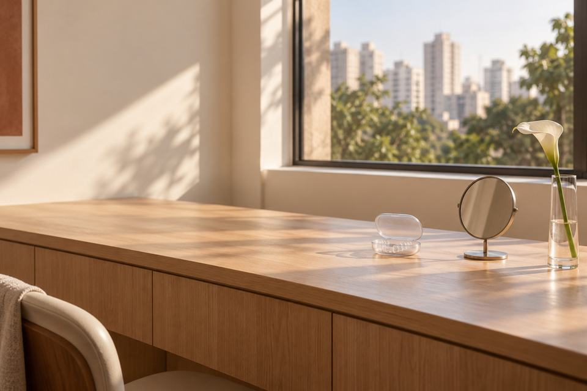

Tratamentos
Tratamentos em Pinheiros
Cada tratamento explicado antes de você marcar: as etapas, o tempo típico e os cuidados depois.

Escolha por situação
Encontre o seu tratamento

1 a 3 sessões, em geral
Tratamento de canal com microscópio
Para tratar a raiz do dente, com anestesia local.

1 sessão, em geral a cada 6 meses
Check‑up digital, limpeza e prevenção
Para a consulta de rotina, mesmo sem nenhum incômodo.

2 a 4 consultas, em geral
Lentes de contato, facetas e restaurações estéticas
Pequenas capas para os dentes, em resina ou porcelana.

1 ou 2 sessões, ou 2 a 3 semanas em casa
Clareamento dental
Para dentes amarelados, no consultório ou em casa.

3 a 6 meses do implante à coroa, em geral
Implante dentário
Para quem perdeu um ou mais dentes.

Em geral, de 1 a 2 anos
Aparelho e alinhadores
Aparelho fixo ou alinhadores transparentes, conforme o caso.

2 a 5 consultas, em geral
Prótese dentária
Para dente muito destruído ou para repor mais de um dente.
Outra situação
Não achou o seu caso?
Conte o que está sentindo pelo WhatsApp e marque uma avaliação.
Primeira consulta
Da primeira mensagem ao último retorno
- 01
Chamar no WhatsApp
Conte o que você sente.
- 02
Avaliação
Cada dente e a gengiva, com radiografia se precisar.
- 03
Plano explicado
O que seria feito, em que ordem e o investimento.
- 04
Tratamento e retornos
Com anestesia local quando o procedimento pede.
Marcar consulta
Marcar a avaliação pelo WhatsApp
Diga qual tratamento você procura.
Horários combinados pelo WhatsApp